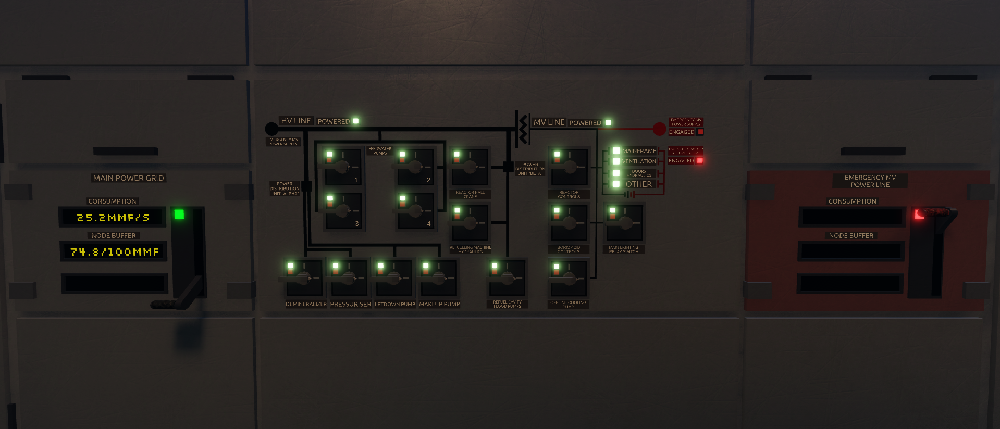
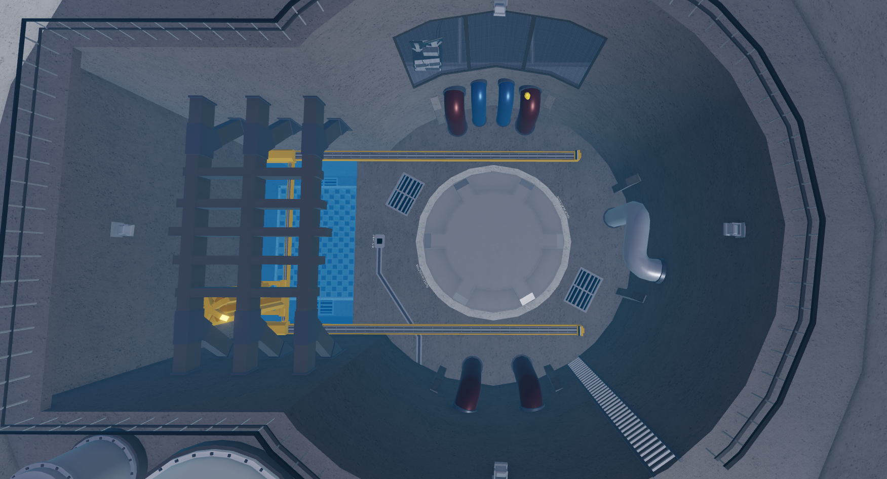
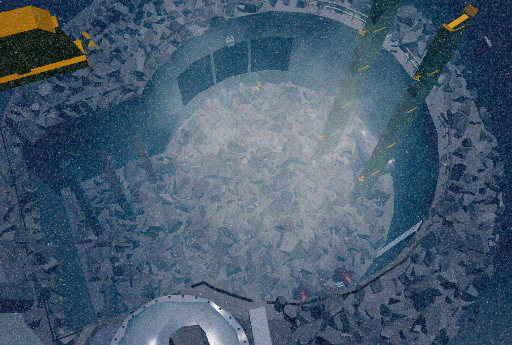
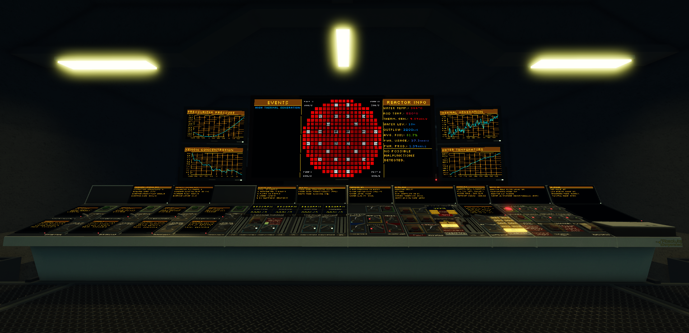

Pre-Startup Procedure
Procedures for preparing the reactor for startup.
Learn moreList of all important procedures and guides.

Procedures for preparing the reactor for startup.
Learn more
Procedures for starting up the reactor.
Learn more
Instructions for safely shutting down the reactor.
Learn more
Common issues, how to identify and resolve them.
Learn more
Procedures for regular maintenance and inspection of the reactor.
Learn more
Procedures for handling emergency situations in the reactor.
Learn more
Procedures for handling routine operations in the reactor.
Learn more
Procedures for handling core assembly and refueling operations in the reactor.
Learn more